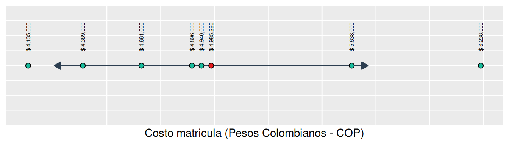

# Costo promedio de matrícula ----
(4389000 +
4896000 +
4135000 +
4940000 +
5638000 +
4661000 +
6238000) /
7[1] 4985286Este capítulo se basa en (Ismay, 2025, Capítulo 1), (Grolemund, 2014, Capítulo 1) y (Wickham, 2019, Capítulo 2) donde tiene como propósito introducir conceptos básicos del lenguaje de programación R utilizando datos de los programas de pregrado de la Facultad de Estudios a Distancia (FAEDIS) de la Universidad Militar Nueva Granada (UMNG).
Exploraremos los siguientes aspectos:
Para desarrollar el contenido de este capítulo recuerda trabajar por proyectos de acuerdo a lo señalado en el Capítulo 3. En ese sentido, genera una carpeta con el nombre 005_como-escribir-codigo-en-r y dentro de la carpeta crea un archivo con el nombre 001_codigo-en-r-datos-faedis.R siguiendo las indicaciones descritas en la Sección 4.4.
Para el año 2026 en el primer semestre, la Facultad de Estudios a Distancia ofrecía 7 programas académicos de pregrado con su respectivo costo de matrícula en pesos colombianos (COP), tal como se señala en la siguiente lista:
Si se buscara calcular el promedio del costo de matrícula dentro de la facultad para este periodo, es posible utilizar R como una calculadora ejecutando el siguiente código:
# Costo promedio de matrícula ----
(4389000 +
4896000 +
4135000 +
4940000 +
5638000 +
4661000 +
6238000) /
7[1] 4985286En R podemos utilizar operadores aritméticos para llevar a cabo operaciones como en una calculadora (ver Tabla 5.1):
| Operador | Nombre | Ejemplo | Resultado |
|---|---|---|---|
+ |
Suma | 2 + 4 |
6 |
- |
Resta | 2 - 4 |
-2 |
* |
Multiplicación | 2 * 4 |
8 |
/ |
División | 2 / 4 |
0.5 |
^ |
Exponente | 2 ^ 4 |
16 |
En el Listado 5.1 se utilizó R para calcular el costo promedio de la matrícula. Sin embargo, si quisieramos reutilizar estos datos tendríamos que escribirlos nuevamente, donde este proceso no es eficiente. R permite guardar datos almacenándolos dentro de un objeto. Una forma de almacenar datos es utilizando vectores atómicos a través de la función c() y luego vinculando el objeto que se busque crear a través de un nombre para utilizarlo cuando lo requieras.
A continuación guardarás el costo de matrícula de cada programa de pregrado en un vector atómico mediante la función c() y luego vincularás ese objeto al nombre costo_matricula, tal como se señala a continuación:
# Vector atómico ----
costo_matricula <- c(
4389000,
4896000,
4135000,
4940000,
5638000,
4661000,
6238000
)
costo_matricula[1] 4389000 4896000 4135000 4940000 5638000 4661000 6238000En el Listado 5.2 se utilizaron comas para combinar los valores en la función c() y el operador de asignación <- para vincular este objeto con el nombre costo_matricula. De esa manera, puedes reutilizar esta información si la requieres nuevamente.
Por ejemplo, si quisieras calcular la dispersión del costo de matrícula alrededor de la media a través de la desviación estandar muestral, (ver Ecuación 5.1), entonces es posible reutilizar los datos vinculados con el nombre costo_matricula.
\[ \begin{aligned} s & = \sqrt{\frac{1}{n - 1} \sum_{i=1}^n (x_i - \bar{x})^2} \\ & = \sqrt{\frac{1}{n - 1} \left[ (x_1 - \bar{x})^2 + \cdots + (x_n - \bar{x})^2 \right]} \end{aligned} \tag{5.1}\]
Donde en la Ecuación 5.1, \(\bar{x} = \frac{1}{n} \sum_{i=1}^n x_i = \frac{1}{n} (x_1 + \cdots + x_n)\) corresponde a la media muestral1.
A continuación podras utilizar R para calcular la desviación estandar muestral y examinar las ventajas de utilizar vectores atómicos. En primera instancia puedes utilizar la functión mean() para calcular el costo promedio de matrícula así como vincular este dato con el nombre media_costo_matricula de la siguiente forma:
# Cálculo de la media muestral ----
media_costo_matricula <- mean(costo_matricula)
media_costo_matricula[1] 4985286Luego puedes utilizar parte de la Ecuación 5.1 para calcular la varianza muestral de la siguiente forma:
# Cálculo de la varianza muestral ----
varianza_costo_matricula <- sum(
(costo_matricula - media_costo_matricula)^2
) /
(7 - 1)
varianza_costo_matricula[1] 531509238095En el Listado 5.3 primero restamos a cada dato la media muestral, costo_matricula - media_costo_matricula, donde R utiliza operaciones vectorizadas. En ese sentido, R resta a cada elemento de costo_matricula el valor de la media muestral media_costo_matricula. Después, también a través de una operación vectorizada, R aplica el exponente 2 mediante ^ a cada elemento de costo_matricula - media_costo_matricula. Posteriormente, utilizando la función sum() R suma cada uno de los elementos en (costo_matricula - media_costo_matricula)^2 para poder dividir el valor correspondiente por 7 - 1 y así obtener la varianza muestral.
Una vez se calcule la varianza muestral, de acuerdo a lo señalado en el Listado 5.3, puedes calcular la raiz cuadrara principal utilizando la función sqrt(), para obtener la desviacion estandar muestral, de la siguiente forma :
# Cálculo de la desviación estandar muestral ----
desv_estandar_costo_matricula <- sqrt(
varianza_costo_matricula
)
desv_estandar_costo_matricula[1] 729046.8En la Figura 5.1 se señala una representación gráfica de la media y la desviación estandar muestral con los datos asociados donde el valor de $ 729,047 se representan a través de un intervalo alrededor de la media, \([\bar{x} - s, \bar{x} + s]\), con un segmento y los extremos señalados con flechas.

De esa manera en la Figura 5.1 es posible observar aquellos valores que se encuentran 1 desviación estandar o menos alrededor de la media y que se encuentran dentro del intervalo \([\bar{x} - s, \bar{x} + s]\).
Cuando utilices R y ejecutes un código es posible que observes texto en la consola. Este texto puede ser el resultado generado al ejecutar el código como también mensajes, advertencias y errores.
Para entender que es un mensaje, advertencia o un error realiza el procedimiento descrito en el primer párrafo de la Sección 4.4. Luego, carga el paquete tidyverse siguiendo las indicaciones de esa misma sección, donde se generará un contenido igual o similar al señalado en el Listado 4.1.
El contenido del Listado 4.1 es un ejemplo de un mensaje. Un mensaje en R tiene como propósito informar al usuario sobre algún aspecto en la ejecución del código. En el caso del Listado 4.1 la primera parte indica el conjunto de paquetes que tidyverse carga al cargar este paquete, así como sus respectivas versiones:
── Attaching core tidyverse packages ── tidyverse 2.0.0 ──
✔ dplyr 1.2.0 ✔ readr 2.2.0
✔ forcats 1.0.1 ✔ stringr 1.6.0
✔ ggplot2 4.0.2 ✔ tibble 3.3.1
✔ lubridate 1.9.5 ✔ tidyr 1.3.2
✔ purrr 1.2.1En el Listado 5.4 se indica que los paquetes cargardos al cargar tidyverse son: dplyr, readr, forcats, stringr, ggplot2, tibble, lubridate, tidyr y purrr.
La segunda parte indica que existen 2 funciones en el paquete dplyr que tienen el mismo nombre que otras funciones en otro paquete estandar (o de base) (ver Sección 4.1) llamado stats y que por lo tanto si se utilizan de manera directa, entonces R empleará las referentes al paquete dplyr:
── Conflicts ──────────────────── tidyverse_conflicts() ──
✖ dplyr::filter() masks stats::filter()
✖ dplyr::lag() masks stats::lag()
ℹ Use the conflicted package to force all conflicts
to become errorsEn el Listado 5.5 las funciones con el mismo nombre en dplyr y stats son filter() y lag(). Si utilizas de manera directa alguna de las funciones, el mensaje indica que estas funciones corresponderan al paquete dplyr. En caso que quieras utilizar las funciones del paquete stat deberás indicarlo de manera explíctia utilizando la sintáxis stats::filter() o stats::lag(), según el caso.
Una advertencia señala un posible problema en el código pero no detiene su ejecución. Para ilustrar este caso ejecuta nuevamente el código señalado en el Listado 5.2. Luego, asume que se quiere aumentar el costo de matrícula para cada uno de los programas académicos pero se comete el error de incluir un aumento sólo para 6 programas de la siguiente forma:
aumento_costo_matricula <- c(
100000,
130000,
250000,
145000,
210000,
94000
)
costo_matricula + aumento_costo_matriculaWarning in costo_matricula + aumento_costo_matricula:
longer object length is not a multiple of shorter object
length[1] 4489000 5026000 4385000 5085000 5848000 4755000 6338000Debido a que R utiliza operaciones vectorizadas es posible llevar a cabo la operación señalada en el Listado 5.6, aún si cada vector atómico (costo_matricula y aumento_costo_matricula) tiene un número diferente de elementos mediante un proceso que se conocer como reciclaje de vectores y que se escribe a continuación:
aumento_costo_matricula) hasta que tenga la misma longitud que el vector más largo (costo_matricula)Por ese motivo para el último costo de matrícula el resultado al generar el aumento es de $ 6,338,000. Sin embargo, R le indica una advertencia al usuario sobre este aspecto aún si lleva a cabo la respectiva suma.
Por último, un error se genera cuando al ejecutar un código existe una imposibilidad lógica de hacerlo o viola las reglas del lenguaje R. En ese caso se detiene la ejecución del código y se genera un texto que busca explicar la razón del problema. De nuevo, para ilustrar este caso asumamos que corregimos la advertencia agregando un nuevo valor de la siguiente manera:
aumento_costo_matricula <- c(
100000,
130000,
250000,
145000,
210000,
94000
45000
)
costo_matricula + aumento_costo_matriculaError in parse(text = input): <text>:8:3: unexpected numeric constant
7: 94000
8: 45000
^En el Listado 5.7 no es posible ejecutar el código debido a que no se agregó una coma, ",", al final del penúltimo valor en el vector atómico aumento_costo_matricula. R no entiende como proceder por qué no se esta separando este elemento del último número para que se definan en total 7 valores.
El uso de vectores atómicos es útil para almacenar datos de un mismo tipo pero tiene limitaciones si se buscan integrar variables de diferentes tipos en una misma estructura. Cuando se analizan datos es necesario agrupar distintos atributos para entender el contexto de la información y poder relacionar diferentes variables.
Una tibble permite agrupar datos en una estructura rectangular para entender la relación de variables de diferentes tipos. Para entender este aspecto construirás una tibble para agrupar y darle un contexto adecuado a la información señalada al principio del Capítulo 5 utilizando la functión tibble().
Para organizar la información de los programas académicos relacionados con el costos de matrícula definiremos en primera instancia tanto el año como el semestre al que se refieren los datos, luego asociaremos un identificador único para cada programa académico, su nombre, nivel académico y finalmente una variable del costo de matrícula.
Para construir una tibble que reuna las características señaladas anteriormente, ejecuta el código del Listado 5.8:
# Creación de tibbles ----
costo_matricula_pregrado <- tibble(
ano = 2026,
semestre = 1,
codigo_snies = c(
6527,
108241,
11428,
11004,
53703,
105142,
10963
),
nombre_programa = c(
"Administración de Empresas",
"Administración de Riesgos, Seguridad y Salud en el Trabajo",
"Contaduría Pública",
"Ingeniería Civil",
"Ingeniería Industrial",
"Ingeniería Informática",
"Relaciones Internacionales y Estudios Políticos"
),
nivel_academico = "Pregrado",
costo_matricula = costo_matricula
)
costo_matricula_pregrado# A tibble: 7 × 6
ano semestre codigo_snies nombre_programa
<dbl> <dbl> <dbl> <chr>
1 2026 1 6527 Administración de Empresas
2 2026 1 108241 Administración de Riesgos, Se…
3 2026 1 11428 Contaduría Pública
4 2026 1 11004 Ingeniería Civil
5 2026 1 53703 Ingeniería Industrial
6 2026 1 105142 Ingeniería Informática
7 2026 1 10963 Relaciones Internacionales y …
# ℹ 2 more variables: nivel_academico <chr>,
# costo_matricula <dbl>En la tibble del Listado 5.8 respecto a las variables ano, semestre y nivel_academico R aplica el proceso de reciclaje de vectores (ver Sección 5.3.2) para ajustar el tamaño de las columnas. En el caso de la variable codigo_snies se fija un código establecido por el Sistema Nacional de Información de la Educación Superior (SNIES) para identificar y asociar de manera única a cada programa académico con el nombre señalado en la variable nombre_programa. Por último, es posible en una tibble utilizar un vector atómico previamente definido, como en el caso de costo_matricula, para generar una variable. En el Listado 5.8 se utiliza el mismo nombre asociado al vector atómico que contiene el costo de matrícula para la columna que incluye dicha información.
En el Listado 5.8 y en el desarrollo del Capítulo 5, se utilizó una convención para nombrar variables similar a la descrita en la Sección 3.3. Sin embargo, existe una excepción fundamental: no se utilizó el carácter -.
En R, para que un nombre asociado a un objeto sea sintácticamente válido, debe cumplir con un conjunto de reglas que se pueden consultar con en el comando ?make.names en la sección Details:
Caracteres permitidos: Solo puede contener letras, números, puntos (.) y guiones bajos, (_). El guion medio, (-), no está permitido porque R lo interpreta como el operador de resta.
Inicio del nombre: Debe comenzar obligatoriamente con una letra o con un punto, (.).
Restricción del punto: Si un nombre inicia con punto, el siguiente carácter no puede ser un número.
Palabras reservadas: No pueden utilizarse términos del lenguaje de programación de R que están reservados, como por ejemplo if, else, for, TRUE o FALSE. La lista completa se puede consultar con en el comando ?Reserved en la sección Details.
Aunque R permite técnicamente nombres como .mi_variable, .Mi_Variable, ñi_variablé, en este libro seguiremos las prácticas señaladas en la Sección 3.3, pero ajustándolas para que generen nombres sintácticamente válidos.
Esto implica 2 cambios principales respecto a nombrar carpetas o archivos: no se utilizará el carácter - donde se reemplazará por _ y nunca se iniciará un nombre con números. Esta diferencia radica en que un sistema operativo es más flexible al nombrar archivos o carpetas mientras que R, al ser un lenguaje de programación, requiere reglas estrictas para evitar ambigüedades al ejecutar código.
Los operadores relacionales son operadores binarios que permiten la comparación de valores en vectores atómicos. Estos operadores son útiles por qué establecen condiciones lógicas para filtrar filas de interés en una tibble. En la Tabla 5.2 se señalan algunos de los operadores relacionales utilizados por R.
| Operador | Nombre |
|---|---|
== |
Igual a |
!= |
Diferente de |
> |
Mayor que |
< |
Menor que |
>= |
Mayor o igual que |
<= |
Menor o igual que |
Para ilustrar el uso de operadores relacionales utilizaremos inicialmente el operador $, el cual fue descrito en la última parte de la Sección 4.4. De esa manera será posible entender más adelante la utilidad de obtener condiciones lógicas para filtrar filas dentro de una tibble.
Si se buscara identificar aquellos valores del costo de matrícula en la tibble costo_matricula_pregrado respecto a la variable costo_matricula que son mayores a la media, se podría proceder de la siguiente manera utilizando el operador $ y operadores relacionales:
costo_matricula_pregrado$costo_matricula >
mean(costo_matricula_pregrado$costo_matricula)[1] FALSE FALSE FALSE FALSE TRUE FALSE TRUEEn el Listado 5.9 se utiliza el operador $ para extraer de la tibble costo_matricula_pregrado los valores de la variable costo_matricula para identificar si son mayores a la media del costo de matrícula, utilizando la función mean(). El resultado, es un vector atómico con valores lógicos (FALSE o TRUE) que identifica que valores dentro de costo_matricula_pregrado$costo_matricula cumplen o no cumplen con la condición. En ese sentido, en el resultado del Listado 5.9 aquellas posiciones con valores TRUE corresponden a las posiciones de costo_matricula_pregrado$costo_matricula que cumplen con la condición, es decir que son mayores a la media del costo de matrícula.
Al principio no pareciera claro cómo se puede utilizar el resultado generado en el Listado 5.9. Sin embargo, a continuación se señalará como un resultado con valores lógicos de TRUE o FALSE permite ser el insumo para poder filtrar filas con base a una determinada condición lógica de interés.
A modo de ejemplo, si buscaras identificar los programas académicos con sus respectivos atributos que cumplen con la condición señalada en el Listado 5.9, es posible utilizar la función filter() del paquete dplyr de la siguiente forma:
filter() y operadores lógicos para filtrar filas en una tibble
filter(
costo_matricula_pregrado,
costo_matricula > mean(costo_matricula)
)# A tibble: 2 × 6
ano semestre codigo_snies nombre_programa
<dbl> <dbl> <dbl> <chr>
1 2026 1 53703 Ingeniería Industrial
2 2026 1 10963 Relaciones Internacionales y …
# ℹ 2 more variables: nivel_academico <chr>,
# costo_matricula <dbl>En el Listado 5.10, la función filter() requiere como primer argumento una tibble (o un objeto similar) y una expresión que resulte en un vector lógico. Los paquetes del tidyverse facilitan este proceso mediante el enmascaramiento de datos (data masking). Este mecanismo permite que la expresión lógica (en este ejemplo, costo_matricula > mean(costo_matricula)) haga referencia directa a las columnas del objeto costo_matricula_pregrado como si fueran variables “independientes”, eliminando la necesidad de utilizar el operador $. De esa manera requieres escribir menos texto al escribir código en R y es posible referirse a las variables de la tibble de una manera más natural al utilizar funciones del tidyverse.
Para nuestro caso \(i = 1, \ldots, 7\), \(x_1 = 4389000, \ldots, x_7 = 6238000\) y \(\bar{x} = 4985286\).↩︎